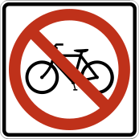

A STUDY IN COLOR & COMMAND / CARINA CHUNG
Stop.
Notice.
React.
Before we read the words, we see the red.
RED SIGNS began with noticing red on the streets of New York. Explore the signs, then follow the history, science, and visual language behind the color.
Explore the signs Start with the prologue ↗
109 SIGNS. ONE SHARED LANGUAGE. ↗EXPLORE THE PROJECT
01 / THE COLLECTIONMeet the signs.
Click, listen, and move through U.S. road signs united by red.
02 / THE STORYBehind the red.
Read the prologue and explore the history, color, and science behind the project.
One color. A language of attention.
About the project ↗